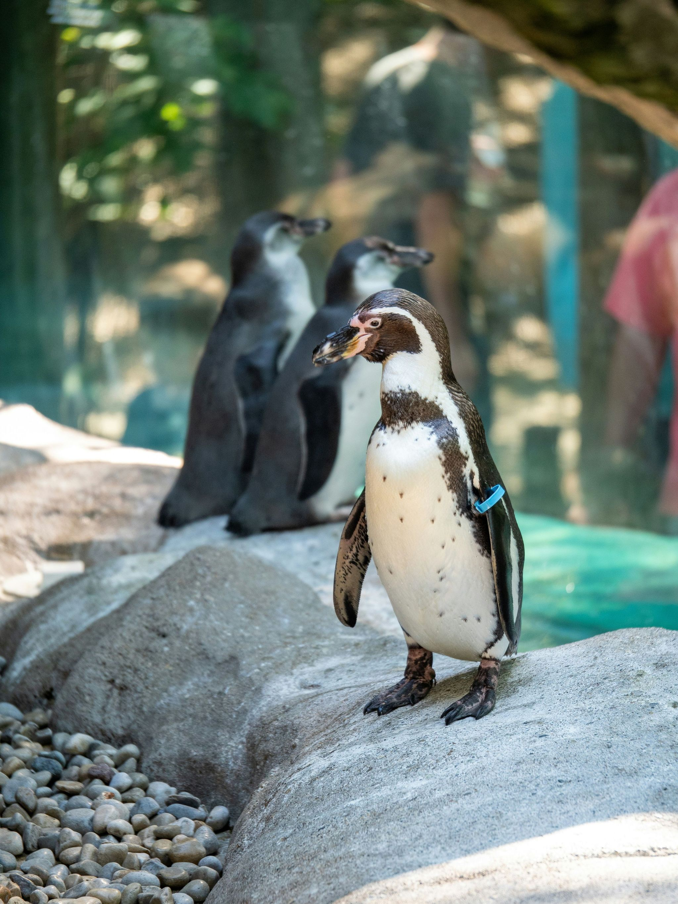
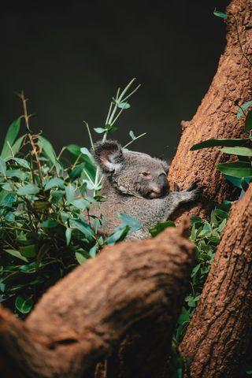
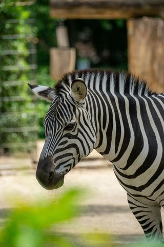
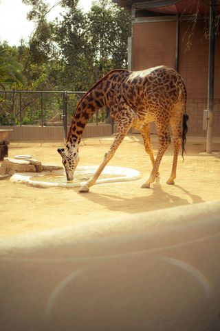
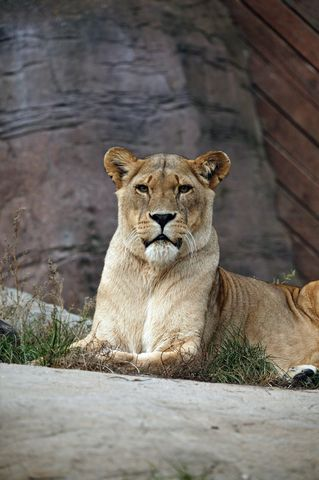
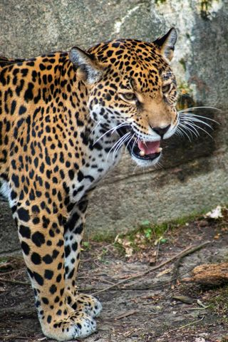

Pinguim do Cabo
Pinguim do Cabo
Plumagem dos juvenis é acinzentada e vai mudando com a idade.
As penas são curtas, densas e revestidas por uma cera, características que, em conjunto, o tornam impermeável e o mantêm quente e seco.
PROTEÇÃO AMBIENTAL
Conservação e Investigação

Desde 1884, o Jardim Zoológico assume a missão de desenvolver e promover um parque zoológico e botânico de excelência, um centro de conservação de espécies vulneráveis e ameaçadas pela extinção.
A investigação científica, os programas de enriquecimento ambiental e a educação para a conservação, em conjunto, são determinantes para esta missão.



